Last summer, I worked with weather satellites in Colorado. I learned a lot about technology, mountains, and living on my own.
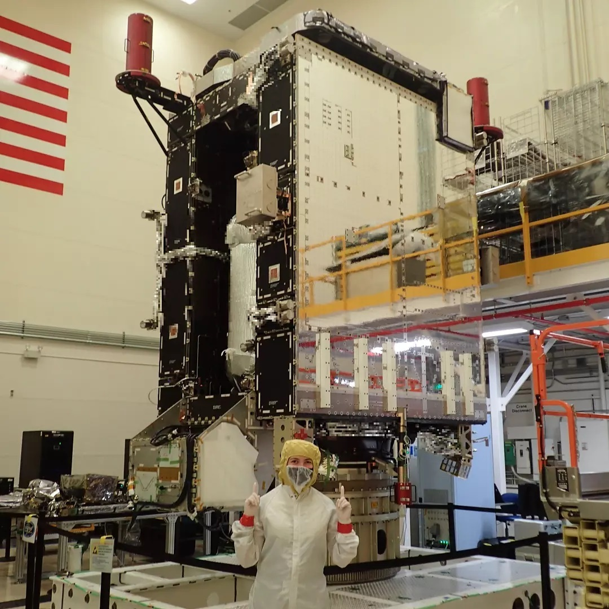
How I got the internship
During the school year, I spent a lot of time applying to internships. I updated my resume and my profiles on LinkedIn and
Handshake, I created a master spreadsheet for my 100+ applications, I attended a bunch of career center events, I interviewed
with a handfull of companies. But none of that changed the fact that no one wants to hire freshmen.
During my senior year of high school (aka during covid), my amazing computer science teacher, Mr. Vo shared some information about
an internship opportunity with Lockheed Martin related to their CodeQuest competition. I was hoping to participate in State Farm's
internship program but I figured it wouldn't hurt to apply to this internship as well. A month or two later, I was working as a
software engineer, supporting the F-35 and C-130.
Although that was a great opportunity and I was very lucky to have a job during a time when millions of people did not, I didn't love
it enough to want to return. I was also wary about the ethics of working in the defense industry. However, when I was halfway through
my spring semester with no job lined up, a Lockheed recruiter reached out to me and I decided to schedule an interview.
That interview was the shortest and simplest application process I've ever done. After a 15 minute phone call with my future manager,
I was offered the job. And this internship was very differnt than the previous summer because I would be moving to a new city to work
in person and because I would be working on weather satellites that save lives, rather than military aircraft.
Now that I had an internship, I had to rush to find housing. The problem was, I knew no one in Denver. After a few weeks of creating a
profile on every roommate search website I could find, I mentioned the problem of housing to my professor, Fr. Sullivan. He suggested
I reach out to the Notre Dame Club of Denver to see if they could help me. The Notre Dame community is pretty amazing. I found a great
housing solution in a matter of days.
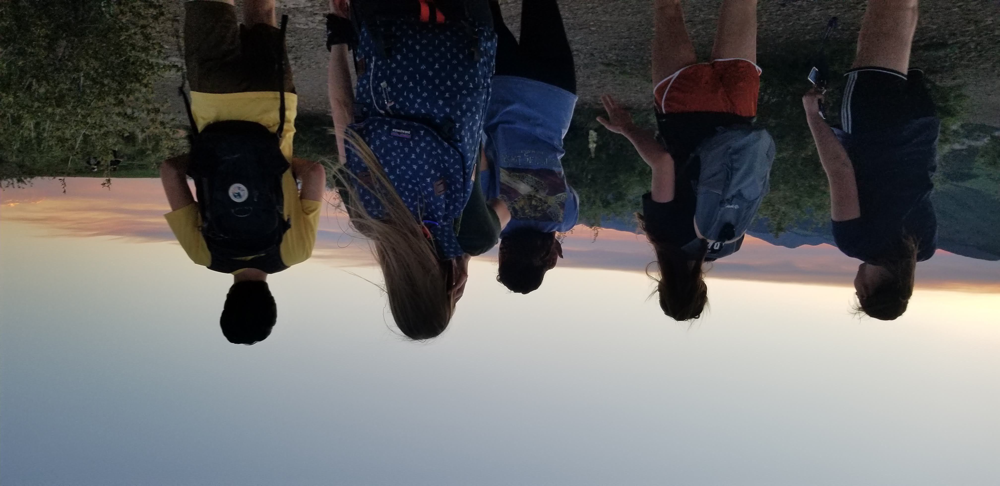
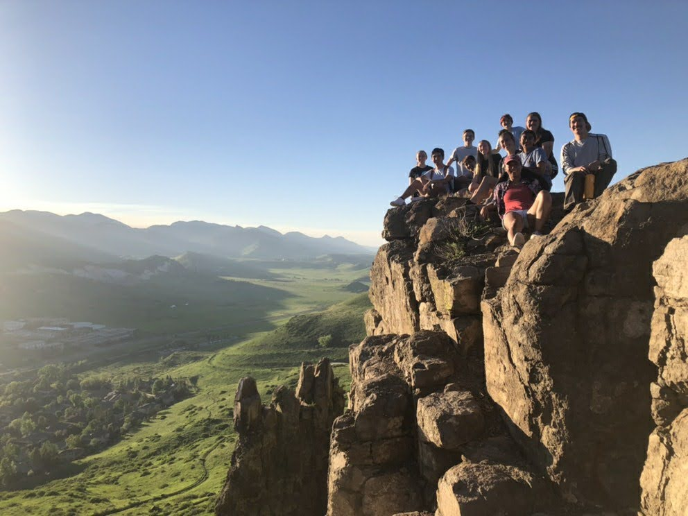
I gained a lot of technical knowledge and skills during the internship, and it was really fun to learn new things, but that can be a
topic for another post. Here, I want to share how I spent my time living in Colorado.
One of the many perks of working for Lockheed Martin is flexible hours and three day weekends. This were kinda nice when I was working
from home during covid, but when I lived in Colorado, it was amazing. I went on a short hike with other interns and they inspired me to
try some longer hikes on my own.
One of the first solo hikes I did was about 7 miles around the Saint Mary's Glacier area.
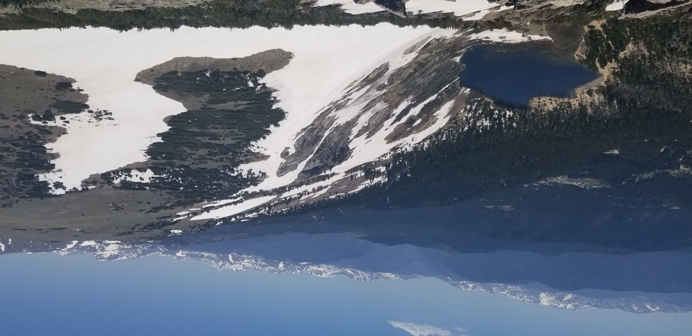
I drove all around Denver, getting to know the area by geocaching. I managed to find at least one geocache on most of my hikes as well.
Each of these adventures could warrant a post of its own, but here are some of the highlights:
I hiked my first fourteener alone, Mount Bierstadt.
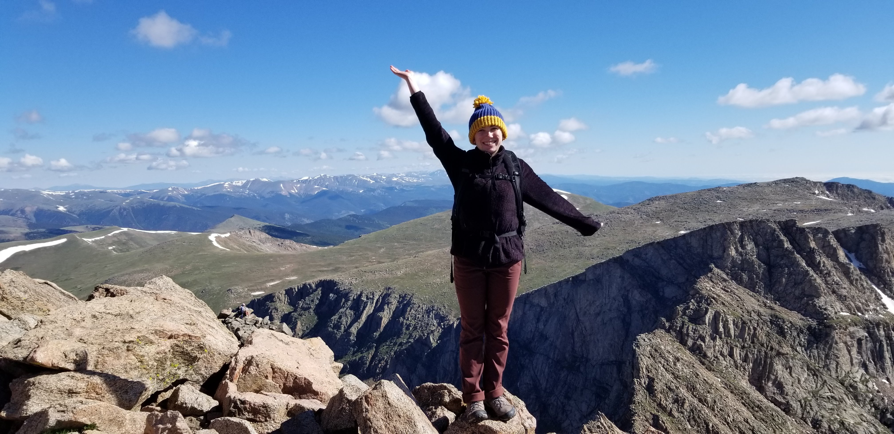
I hiked Mount Elbert, the highest peak in Colorado with another Lockheed intern, Julia.
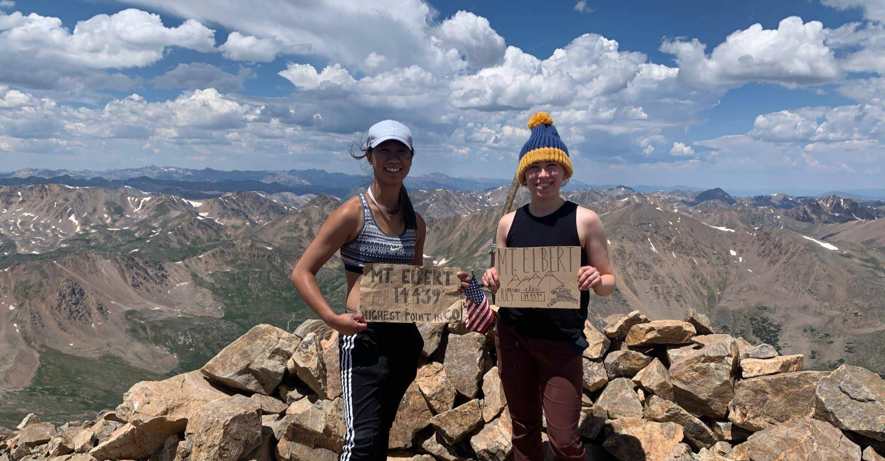
I drove to Tarryall to find the oldest geocache in Colorado.
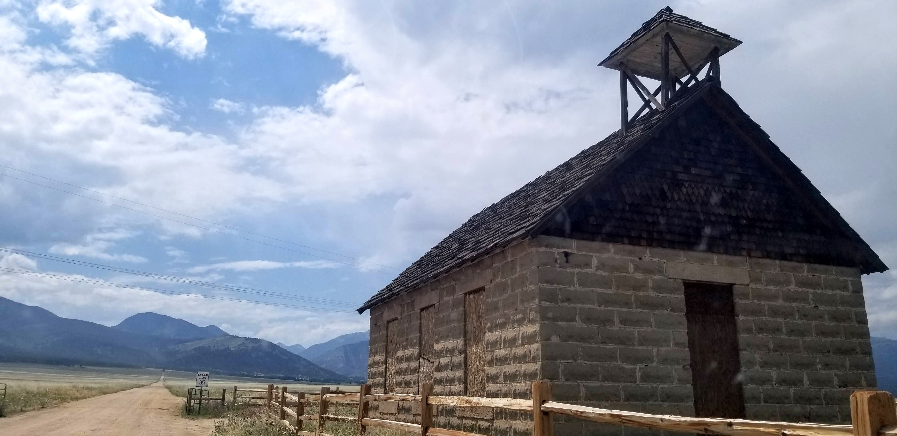
I hiked Mount Princeton by myself. I did the first three miles, slept in my hammock, then made the summit on the following morning.
On my way back down, I met a high school cross country team and got a ride with them down the last three miles back to my car.
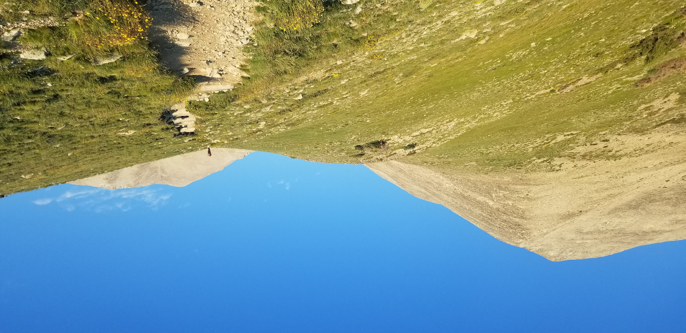
I went backpacking by myself in the Maroon-Snowmass Wilderness Area. I had to change plans last minute as to which trail I would hike
and it hailed, but I still had a good time!
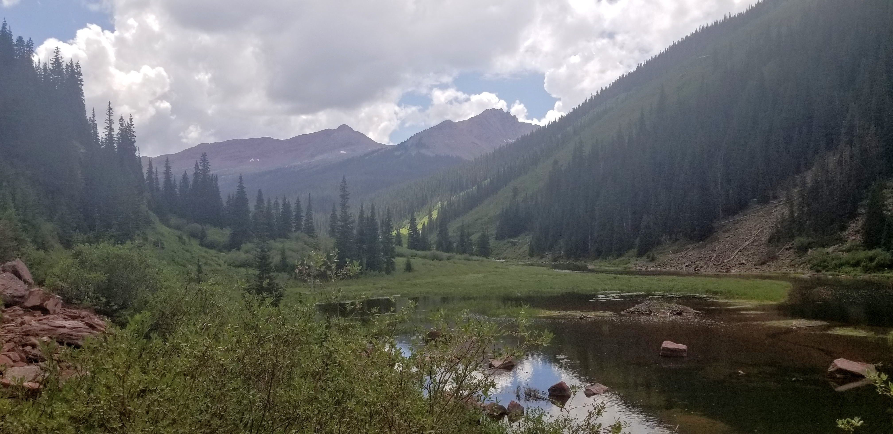
I found a plum tree at a post office in Lyons that was covered in ripe plums, so I made jam.
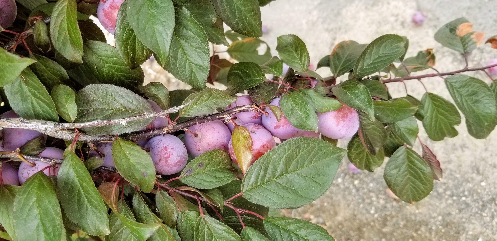
I hiked Mount Yale by myself, bringing my total number of fourteeners to 4 for the summer.
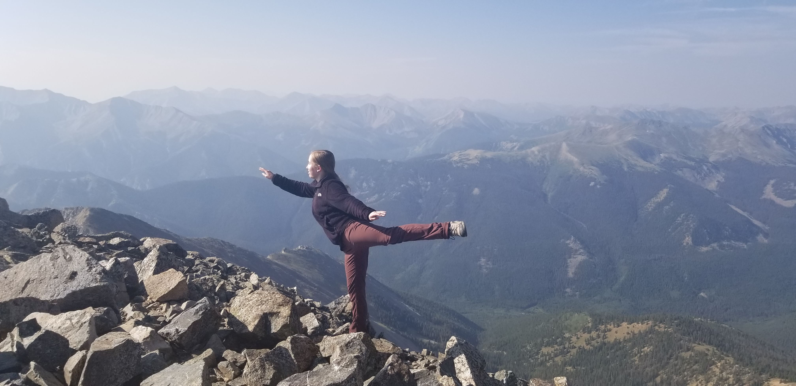
I jumped out of a plane.